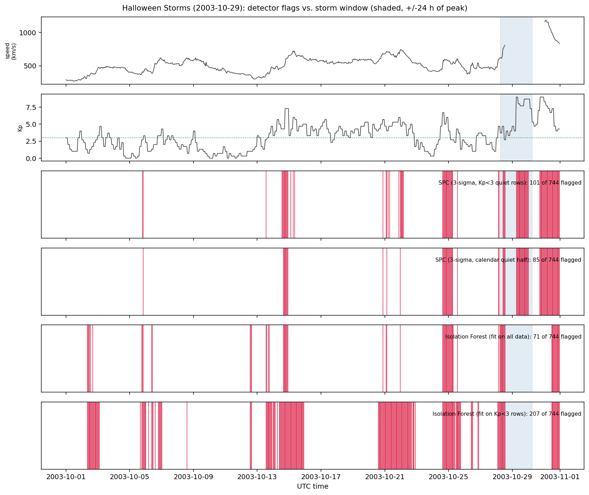
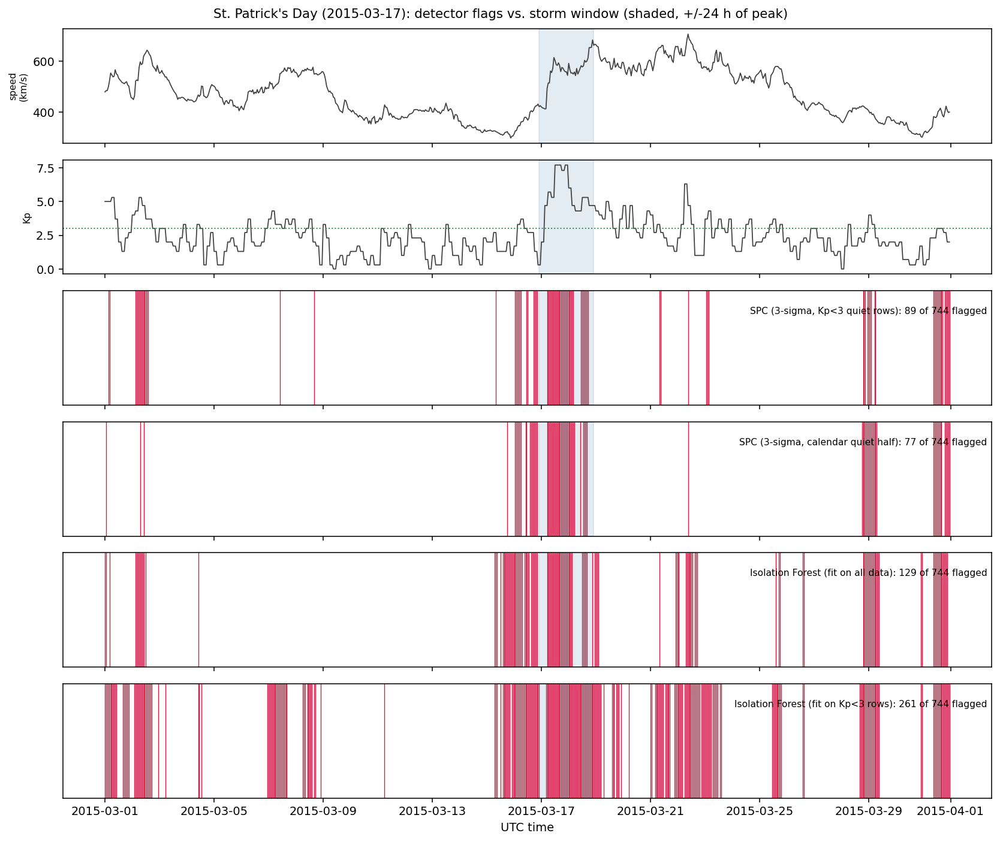

I built a solar-storm detector on 3,696 hours of NASA and NOAA telemetry, and an evaluation framework that caught the highest-recall model flagging a third of every month.

A geomagnetic storm collapsed the Hydro-Québec grid on 13 March 1989 and blacked out the province for nine hours.
GPS auto-steer drifted by up to 230 feet during peak planting in May 2024, at an estimated cost to US farmers.
Air density at 400 km rose sixfold in the same storm. One satellite's decay went from 38 to 180 metres per day.
Pick a storm and a detector, then move the thresholds: everything recomputes in your browser, the shaded band is the real storm window, and each red mark is an hour the detector flagged.
Isolation Forest sets its own threshold from the contamination parameter, so the sigma slider does not apply to it.
.
| Configuration | Flagged | Precision | Recall | Quiet FAR |
|---|
| Quantity | Value |
|---|
Every configuration detected every storm. Event recall is 1.000 across the board, so the headline metric carries no information. Detection was never the hard part; restraint was. On precision and on quiet-period false alarms, the statistical baseline led Isolation Forest in every window.
| Configuration | Precision | Point-wise recall | Quiet false-alarm rate | Hours flagged |
|---|---|---|---|---|
| SPC, calendar quiet half | 0.394 | 0.392 | 2.4% | 262 |
| SPC, Kp<3 quiet rows | 0.282 | 0.616 | 4.3% | 561 |
| Isolation Forest, all data | 0.254 | 0.494 | 6.1% | 471 |
| Isolation Forest, Kp<3 rows | 0.136 | 0.661 | 15.6% | 1172 |
It was not, entirely. A detector that flags fewer hours shows higher precision almost by construction, and Isolation Forest fires roughly twice as often as the baseline at 3σ. So I re-ran it with the baseline's threshold tuned per window to flag exactly as many hours.
| Mean precision gap | Paired t-test | Windows won | |
|---|---|---|---|
| At default settings | +0.141 | p = 0.013 | 5 of 5 |
| At matched flag rate | +0.048 | p = 0.306 | 3 of 5 |
| Window | n flagged | IF precision | SPC precision | sigma used | Leader |
|---|---|---|---|---|---|
| Bastille Day | 89 | 0.292 | 0.315 | 1.69 | SPC |
| Halloween Storms | 71 | 0.113 | 0.296 | 3.57 | SPC |
| St. Patrick's Day | 130 | 0.225 | 0.315 | 2.44 | SPC |
| September 2017 | 90 | 0.356 | 0.300 | 2.21 | IF |
| Gannon Storm | 92 | 0.283 | 0.283 | 1.37 | tie |
About two thirds of the advantage I first reported is an operating-point artifact. What remains points the same direction but is no longer statistically distinguishable from zero across five windows. Removing the second source of leakage, under a leave-one-storm-out protocol, leaves the direction unchanged. Both re-tests are in the appendix.
The shared detector interface is what makes the comparison a comparison: one evaluation path consumes either detector without special-casing, so neither one gets a metric the other does not.
Isolation Forest fitted on quiet data posted the highest recall of anything tested, 0.661, by flagging 1,172 of 3,696 hours. Its precision, 0.136, and its quiet-period false-alarm rate, 15.6%, are both the worst in the set. Accuracy is no safer: with 5% of hours inside a storm, flagging nothing scores 95%.
Two detectors compared at whatever threshold their libraries happen to pick are not being compared. Either match the alert budget or compare full precision-recall curves. I did neither at first, and two thirds of my headline result was the cost.
This is 3,696 hourly rows, but solar wind is strongly autocorrelated. Measured decorrelation times run from 38 to 119 hours, which puts the effective number of independent observations near 51. Any confidence interval built on the row count is too narrow by roughly a factor of eight.
The scheduled job distinguishes no storm from no data. A stale or unreachable feed publishes an explicit unknown state, and the job exits non-zero only for defects in my own code, never for NOAA having a bad morning. A monitor that reports all-clear because its fetch broke is worse than no monitor.
Everything below is collapsed. Open what you want to check.
The Sun continuously emits a stream of charged particles called the solar wind, normally passing Earth at around 400 km/s. Occasionally it throws out a coronal mass ejection: a billion tonnes of magnetised plasma at up to 3,000 km/s. When one arrives it compresses and shakes Earth's magnetic field, inducing currents in power lines and pipelines and inflating the upper atmosphere against satellites. The disturbance is measured by the Kp index, a 0 to 9 scale updated every three hours. Kp below 3 is a quiet day. Kp 5 and above is an official geomagnetic storm.
My detector works on hourly solar wind measurements taken upstream of Earth: speed, density, temperature and magnetic field strength. Ground truth is a catalogue of the five largest storms since 2000, 3,696 hourly samples in total.
The headline figures are in-sample: the quiet baseline is fitted inside the same window it is then scored on. To remove that leakage, the quiet reference is estimated by pooling Kp<3 rows from the four windows a detector is not being scored on, then applied to the held-out fifth. No row contributes to both the baseline and its own evaluation.
| Configuration | Threshold | Precision | Recall | Quiet FAR | Flagged |
|---|---|---|---|---|---|
| SPC in-sample | default 3 sigma | 0.282 | 0.616 | 0.043 | 561 |
| SPC in-sample | matched budget | 0.301 | 0.571 | 0.039 | 471 |
| SPC held-out | default 3 sigma | 0.264 | 0.629 | 0.065 | 613 |
| SPC held-out | matched budget | 0.327 | 0.620 | 0.044 | 472 |
| Isolation Forest | contamination auto | 0.254 | 0.494 | 0.061 | 471 |
Held-out evaluation does not cost accuracy here. It slightly improves it: at a matched budget the held-out baseline reaches precision 0.327 against 0.301 in-sample, a difference of +0.026 (paired t p = 0.135). Pooling quiet rows across four windows appears to yield a more stable estimate of the quiet mean and standard deviation than fitting on a single month. That partially contradicts the rationale for per-window fitting I gave myself, which was reasoning rather than measurement.
With both leakage and the operating point controlled, the baseline still leads. Against Isolation Forest at an identical alert budget it leads on precision (+0.073, p = 0.162), on recall (+0.127, p = 0.108) and on quiet-time false-alarm rate (-0.017, p = 0.237), winning four of five windows on each. The Gannon window is an exact tie on every metric. None of the three differences reaches significance at five windows.
Detailed results are provided in reports/heldout_validation.csv.
October 2003 is the hardest window for every detector, and the failure is uneven. The baseline degrades to F1 0.343 while Isolation Forest collapses to 0.062. That month had elevated geomagnetic activity in 54% of its hours.
The natural explanation is base-rate shift. An unsupervised detector infers what is normal from the data it is given, so a month that is mostly disturbed teaches it that disturbance is normal, while a baseline anchored to an external quiet reference survives.
I tested it across all five windows and the data does not support it. The correlation between a window's disturbed fraction and the performance gap is Spearman r = -0.10, p = 0.87. Three windows at nearly identical base rates show gaps of -0.150, +0.067 and +0.131, so the scatter at matched base rate is as large as the effect being explained.
The mechanism stays plausible and is consistent with how isolation works. It is not something five windows can establish, and I am not going to claim it is.

This is a demonstration of method, not an operational forecasting tool. NOAA SWPC does the real job with physics-based models, dedicated spacecraft, and human forecasters. A precision of 0.394 means most alerts are still wrong, so nobody should run infrastructure on it.
The OMNI2 source data is committed, cache keys are a deterministic function of the storm catalog, and every result reproduces offline on any machine. The suite is 108 tests, with continuous integration across Python 3.11, 3.12 and 3.13 and a ruff lint gate.
Accuracy appears nowhere in this project, on purpose. With roughly 5% of hours inside a storm, a model that flags nothing at all is 95% accurate. On rare-event problems accuracy does not merely mislead, it actively rewards doing nothing.
The interactive explorer above runs with no server. Detector outputs are
precomputed by scripts/export_web_data.py and thresholded in the
browser, and the browser arithmetic was verified against the Python reference in
src/evaluation.py across all 180 storm, detector and threshold
combinations. Z-scores are serialised to six decimals rather than two, because the
browser reproduces Python's strict abs(z) > sigma test and
two-decimal rounding shifted flag counts by up to three hours per window.